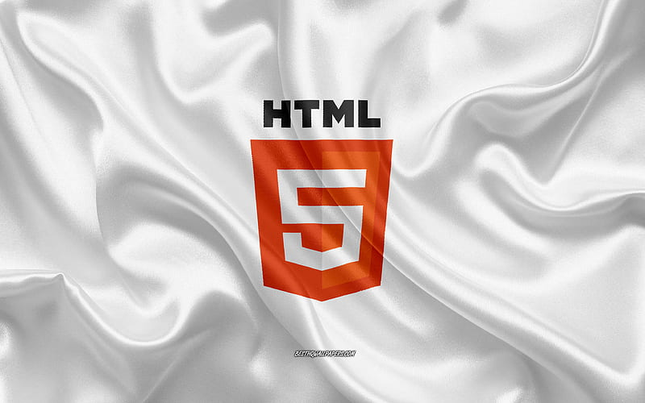

About Me
- Currently pursuing B.Tech (3rd Year) at Veltech University, Chennai.
- Native of Akividu mandal, West Godavari district, Andhra Pradesh.
- Passionate about web development, both front-end and back-end.
- Skilled in HTML, CSS, JavaScript, Python, Flask, and Flask-SQLAlchemy.
- Developed a full-stack project — Student Career Tracker.
- Secure user login, admin management, notes, achievements, career goal tracking.
- Learnt web development through platforms like Code With Swaroop.
- Highly self-driven and always exploring new technologies.
- Working on improving soft skills along with technical knowledge.
- Focused on landing a high-paying job with a strong career foundation.
Education
Vel Tech Rangarajan Dr. Sagunthala R&D Institute of Science and Technology, Chennai B.Tech in Computer Science and Engineering (AI & ML), 2022 - Present CGPA: 7.46
INTER
HOLY CROSS JR. COLLEGE, Vijayawada, 2020 - 2022 Board of Intermediate Education (MPC),CGPA: 71.8%SCHOOL
Aditya (E.M) High School, Akividu, Completed in 2020 Board of Secondary Education, CGPA: 9.3%My Skills
-
Python basics

-
HTML
 -
CSS

-
JAVASCRIPT BASICS

Projects
-
Jarvis Desktop Assistant (Python)
A smart voice assistant for desktop automation.
Features: Play music, tell time, WhatsApp, Google search, app control.
Tech: Python, pyttsx3, pyautogui, speech_recognition, TensorFlow (planned).
-
Student Result Portal (Flask)
Result management system for colleges.
Features: Admin/student login, result upload, export, profile & password update.
Tech: Flask, SQLite, HTML, CSS, Bootstrap.
-
Student Career Tracker (Flask)
Helps students manage achievements and goals.
Features: Resume upload, career logs, PDF/CSV export, admin panel.
Tech: Flask, SQLAlchemy, Bootstrap.
-
E-Commerce Website (In Progress)
Online shopping site with user auth and cart system.
Tech: Flask/Django, HTML, CSS, Bootstrap, SQLite/MySQL.
-
Task Manager with Light/Dark Mode
Stylish task tracker with theme toggle.
Tech: HTML, CSS, JavaScript.
Interests & Goals
- Want a job with a good package.
- Improving soft skills and interview confidence.
- Interested in web development, AI/ML, and smart assistant apps.
Contact
MUDDE JITENDRABABU
- muddejitendrababu@gmail.com